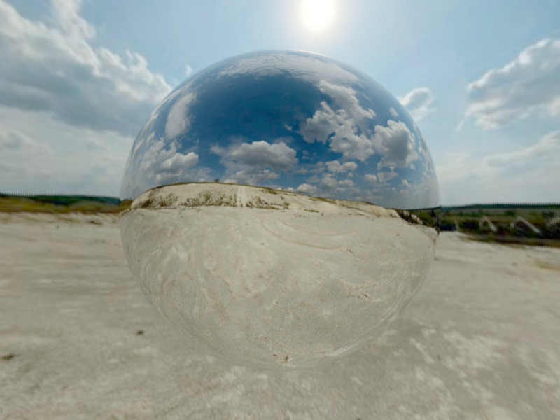

Alessia
1. Image Textures
I implemented the images as texture feature using PNG images. For this, I had to use thelodepng library.
this link helped me understanding how to access the pixel value. I basically have a vector made of "RGBA RGBA RGBA..." values for each pixel, and uv coordinates. So the main problem was finding the index of the pixel in that vector. The texture is scaled by a scale parameter and applied over the shape I choose. I scaled the texture3 used for the ground.
I also try to scale the perlin noise, on the left image that can be seen here.
The first one is obtained scaling the perlin noise (texture 4) by 0.50, 0.50. The second one is obtained without scaling the perlin noise texture.


This is the Mitsuba version of the rendering, with the perlin texture NOT scaled: they apply the textures the same way, but the colors are a bit different, probably because of the library I use to extract pngs.

These are the four textures that I used:


2. Procedural Textures
For this feature, I first tried to generate a procedural texture made of colored stripes. I enabled the possibility of choosing the scaling factor, the two colors and the delta factor. The implementation was quite straightforward. The code can be found in the classproceduraltexture.cpp.Then I tried to implement the perlin noise. I spent a lot of time on this, because I was using some noise function that were not optimal for the aim of generating the perlin one. At the end, I followed this reference to implement it.
The noise function used in Perlin noise is a seeded random number generator. It returns the same value every time it is called with the same values for input. Then, I smoothed out the values that this noise function returned by using a cosine interpolation function, which worked better than the linear one because returned a much smother curve.
I used some variables like
octaves, lacunarity and frequency to modify the noisy function created. An octave is each successive noise function that is added. I decided to use 9 octaves. Each noise function added had twice the frequency of the previous one. I did some trials with a bigger number but after a certain number one had a too high a frequency to be displayable.The centered cup displayes the procedural perlin noise in two different colors.


Here examples of perlin noise taken from here , here and here can be seen.


3. Advanced Camera Model: Depth of field, Lens distortion, Chromatic Aberration
3.1. Depth of field
To implement the depth of field, I added two extra parameters to the camera. One is the size of the lens aperture, and the other is the focal distance. I pass them throug the xml file of the scene.I modified the file
perspective.cpp: if depth of field is activated for the scene, the ray’s origin and direction are modified so that depth of field is simulated.
I calculated the intersection of the ray through the lens center with the plane of focus, and then initialized the ray: its origin is set to the sampled point on the lens, its direction is initialized so that the ray passes through the point on the plane of focus.ray.mint and ray.maxt remains the same of the previously provided code.
Following, different trials can be seen.
Focal Length = 8, radius = 0.2
The first image represents a focal length of 8, and a radius of 0.2. We can see that a small radius and a small focal length lead to focusing on the closer cup.

Focal Length = 15, radius = 0.2
The second represents a focal length of 15 and a radius of 0.2. Due to a higher focal length, we see that the closest cups are not focused anymore, differently from the ones more distant.

Focal Length = 15, radius = 0.5
Finally, the last one represents a focal length of 15, and a radius of 0.5. Here, by putting a longer radius we see that a smaller area is focused.

3.2. Lens Distortion
This feature extends the perspective camera with the effect of radial distortion. I added three extra parameters, which arechange1 and change2, the second and fourth-order terms in a polynomial function that models the barrel distortion, and the boolean m_distortion, which indicates if the distortion is activated or not. After I calculate the distortion, with the function calculateDistortion(), I multiply the x and y coordinates of the position on the near plane for this factor. I followed mitsuba for calculating the distortion. 

3.3. Chromatic aberration: TODO REPORT
4. Spotlight
For this feature, I implementated a spotlight based on the implementation in the book "Physically based rendering".Spotlights are a variation of point lights: they emit light in a cone of directions from their position instead of shining in all the directions. The functions are very similar to the ones written for
pointlight.cpp. For example
the sample() method is almost identical to the pointlight's one, except for the fact that it calls the cutOff() method, which computes the distribution of light accounting for the spotlight cone. For this function, due to the fact that I am comparing the results with Mitsuba, I changed the return value of the function cutOff according to Mitsuba implementation. The parameters I input to the spotlight are
cosFalloffStart,cosTotalWidth and the direction I want the spotlight to point to.
Here we can see the validation:


5. Environmental Map Emitter
The environmental map emitter was one of the features that took more time to be implemented. This paper helped me a lot. I followed the pseudo code given in that paper to implement the functionsprecomputer1D() and sample1D().In the paper, importance sampling an envmap depends on the intensity distribution of the light texture. The made assumption is that that illumination in images is represented using latitude-longitude parameters. In fact the
sample() method samples points and converts them to spherical coordinates for sampling the sphere.I downloaded the texture from here . In my scene I put a conductor sphere of radius 4. The envmap sphere is modeled by a sphere of radius of 30.


6. NL means denoising:
To complete this task, I implemented a matlab function following the pseudocode given in the slides from the lectures. I added the optimization for the fast implementation, that updates datvar as the maximum between datvar and the convolution of datvar and box2.The inputs of the function are
f, r, k, I used the values given in the slides from lecture (3,10,0.45). In order to use the function with exr files, I had to install the tool
openexr for matlab. In order to obtain the variance in exr format, I had to modify the code from
render.cpp. I used the same structures (ImageBlock and BitMap) used in the provided code to save the original rendered image in that class. I applied the function to the cbox scene generated for
path_mats function. Here the result: